Windows
Tu sistemaWindows 10 u 11, x64.
Sin firma de código. Si SmartScreen dice "Windows protegió su PC", elige Más información → Ejecutar de todas formas. Si falta WebView2, el instalador lo descarga.
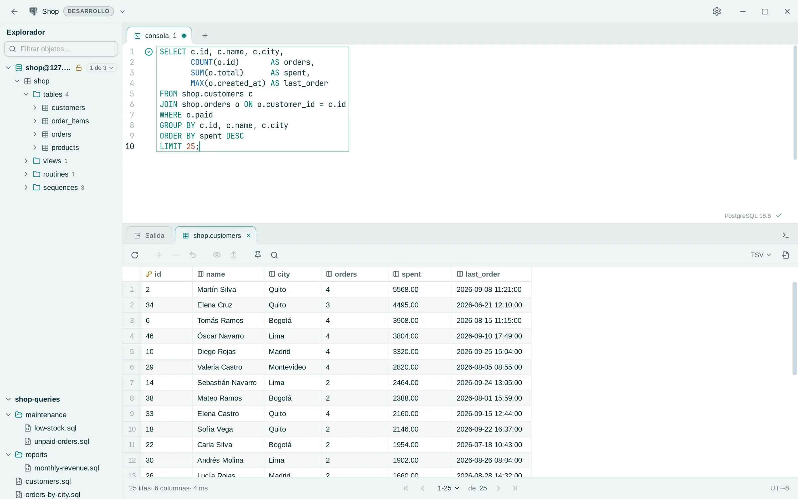
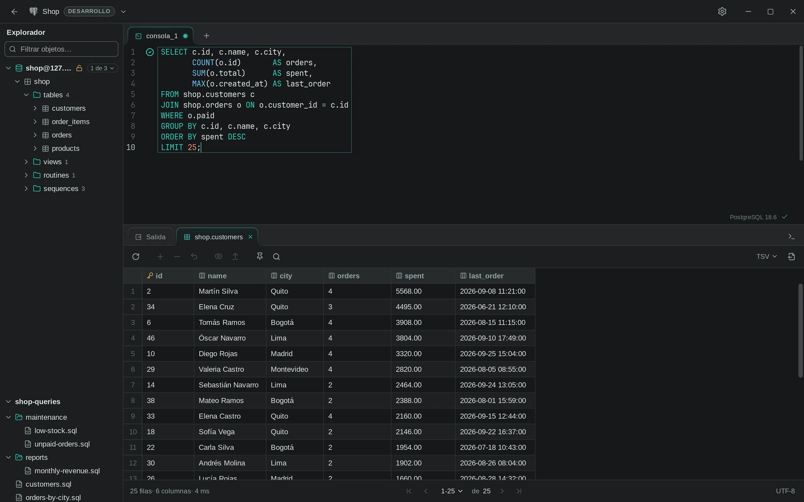
Lo que cambias en la grilla no se escribe enseguida. Rowly DB lo convierte en sentencias y te las muestra antes.
Cambia celdas, agrega filas con Ctrl I y marca filas con Ctrl Supr.
Cada cambio se convierte en un INSERT, UPDATE o DELETE que puedes leer antes de ejecutarlo.
Las sentencias se ejecutan juntas. Si una falla, no se aplica ninguna. En conexiones de producción, toda escritura pide confirmación.
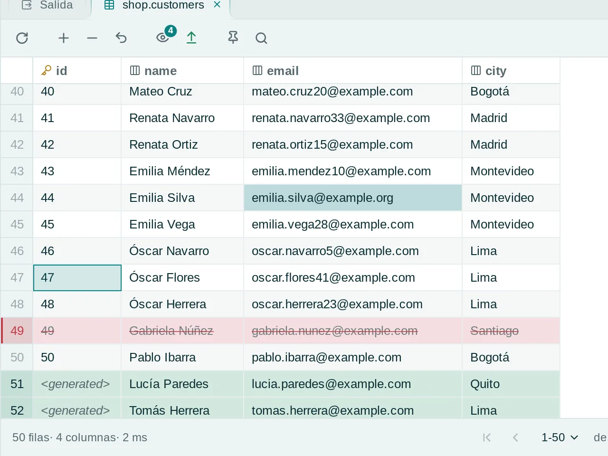
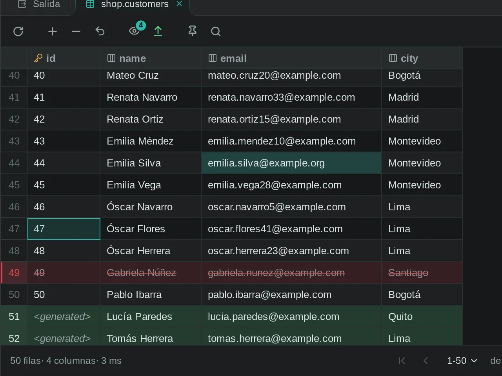
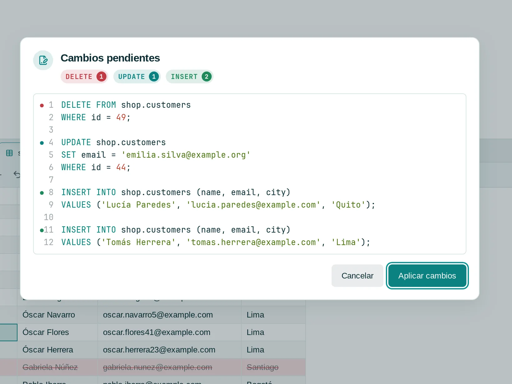
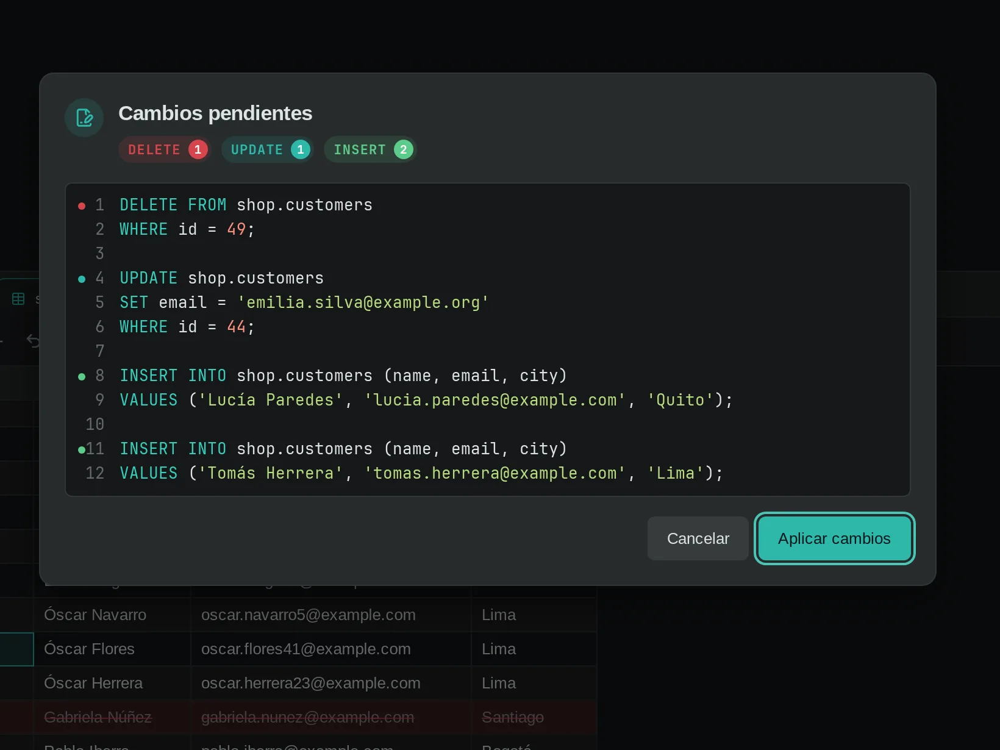
Las sugerencias y los avisos salen de las tablas, columnas y claves foráneas de la base conectada.
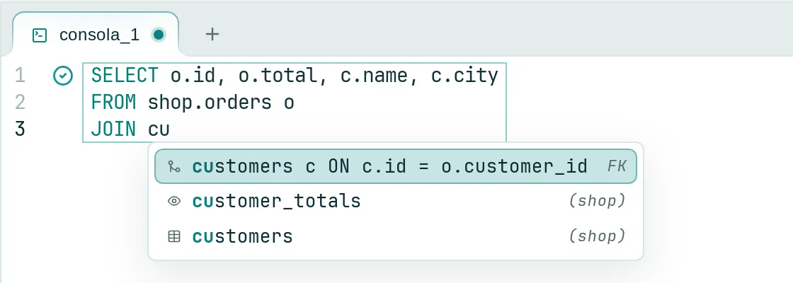
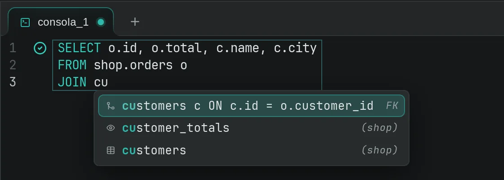
Tablas, columnas y condiciones de JOIN completas.
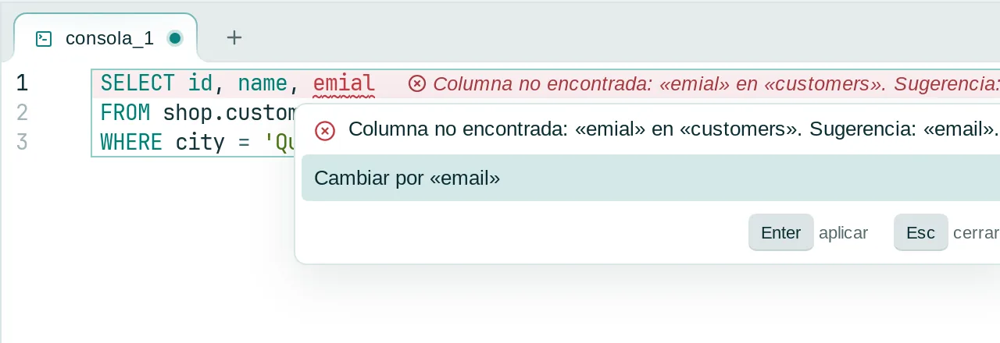
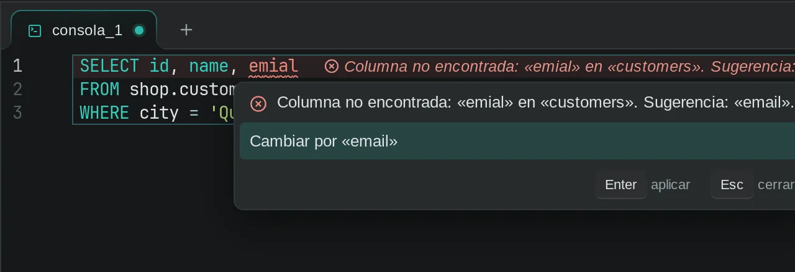
Con el nombre probable. Alt Enter lo aplica.
Pon consolas y pestañas de resultado lado a lado, y abre una shell en la carpeta SQL de la conexión.
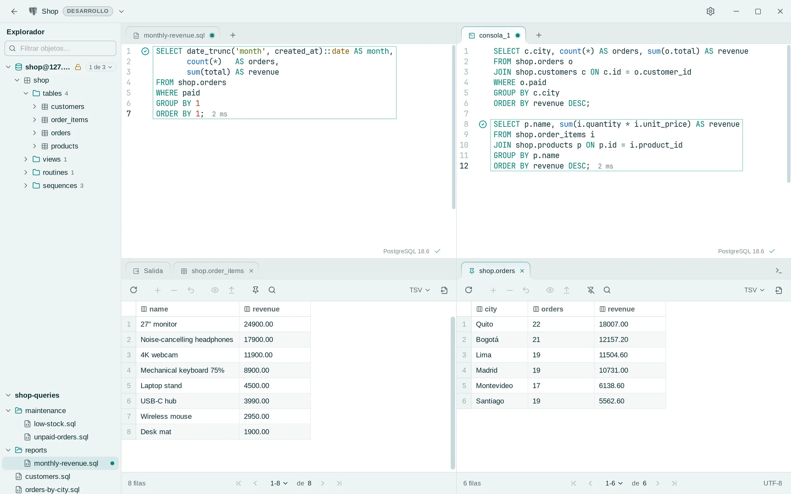
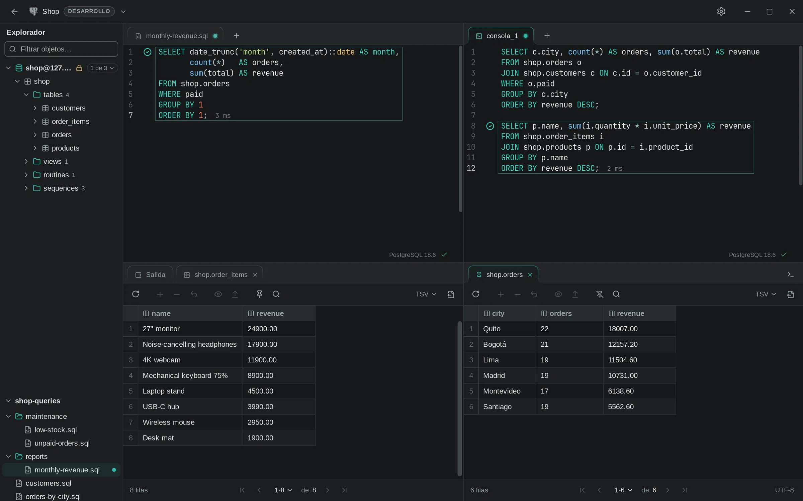
Ctrl Alt M pone en mosaico otra consola o pestaña de resultado; Ctrl Alt W la vuelve a juntar.
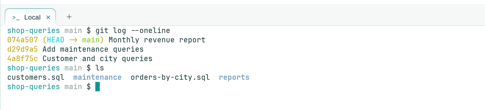
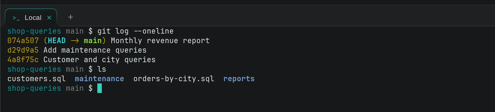
Ctrl T abre tu shell en la carpeta de tus archivos .sql, para git o herramientas de migración.
Lo de todos los días en un cliente SQL.
Cada versión de la lista pasa la matriz completa de pruebas SQL contra un servidor real en CI. Las demás se conectan y se marcan como no verificadas.
| Motor | Versiones verificadas | Líneas de versión |
|---|
Versión {{version}}Notas de la versión Todos los archivos
Windows 10 u 11, x64.
Sin firma de código. Si SmartScreen dice "Windows protegió su PC", elige Más información → Ejecutar de todas formas. Si falta WebView2, el instalador lo descarga.
Menú Apple → Acerca de este Mac muestra tu chip.
Sin notarizar por Apple, así que macOS bloquea el primer arranque. Abre Ajustes del Sistema → Privacidad y seguridad y elige Abrir igualmente.
x86_64 con WebKitGTK 4.1, que instala tu gestor de paquetes.
No hay compilaciones ARM. Las actualizaciones llegan desde la app, no desde tu gestor de paquetes.
curl -LO https://github.com/anderson-andres-dev/rowly-db/releases/download/v{{version}}/Rowly.DB_{{version}}_amd64.deb
sudo apt install ./Rowly.DB_{{version}}_amd64.debapt instala las bibliotecas que necesita.
sudo dnf install https://github.com/anderson-andres-dev/rowly-db/releases/download/v{{version}}/Rowly.DB-{{version}}-1.x86_64.rpmdnf descarga el paquete y sus dependencias.
curl -LO https://github.com/anderson-andres-dev/rowly-db/releases/download/v{{version}}/rowly-db_{{version}}_x86_64.pkg.tar.zst
sudo pacman -U ./rowly-db_{{version}}_x86_64.pkg.tar.zstpacman instala las bibliotecas que necesita.
curl -LO https://github.com/anderson-andres-dev/rowly-db/releases/download/v{{version}}/Rowly.DB_{{version}}_amd64.AppImage
chmod +x Rowly.DB_{{version}}_amd64.AppImage
./Rowly.DB_{{version}}_amd64.AppImageNo hay nada que instalar. Guarda el archivo donde quieras ejecutarlo.
¿Ya lo tienes? Las versiones nuevas llegan en Ajustes → Actualizaciones, y los paquetes de actualización están firmados. También puedes compilarlo desde el código.
Doble licencia MIT o Apache-2.0. Sin cuenta y sin edición de pago.
Sí. Sin cuenta, sin edición de pago y con el código publicado bajo MIT o Apache-2.0.
El instalador de Windows no tiene firma de código y la app de macOS no está notarizada, así que SmartScreen o Gatekeeper pueden detener el primer arranque. Los pasos para continuar están junto a cada descarga.
Las versiones nuevas aparecen en Ajustes → Actualizaciones y se instalan cuando tú lo decides. Los paquetes de actualización están firmados.
PostgreSQL, MySQL y MariaDB. Los motores nuevos se prueban contra servidores reales antes de aparecer en la lista.